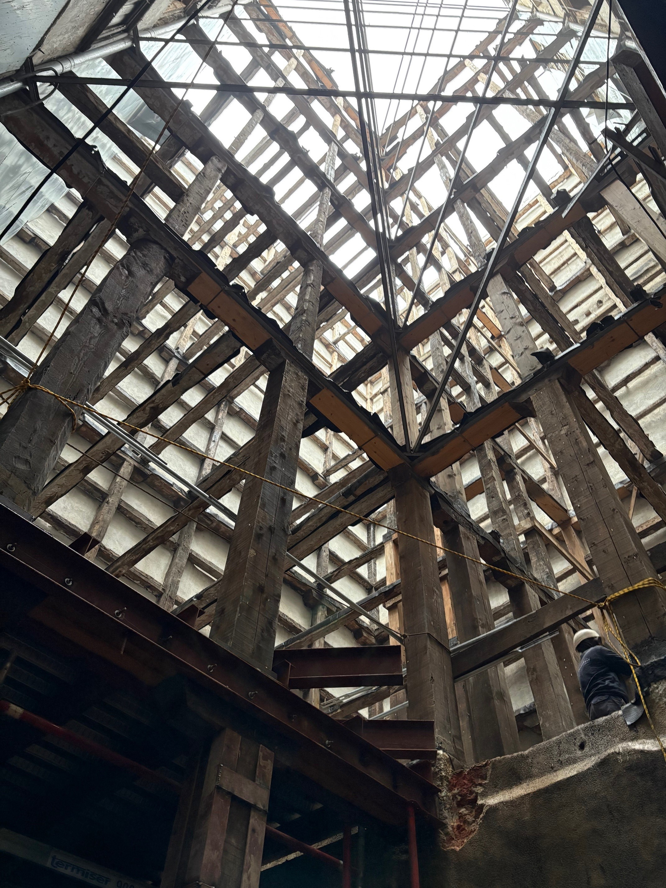

Rehabilitación Estructural en Calle Pez
Intervención integral y refuerzo en edificio de entramado (1862)
Contexto y Condicionantes de Partida
La intervención en el edificio de la Calle del Pez nº 3 presenta la complejidad característica del parque edificado madrileño de mediados del siglo XIX. Aunque la datación catastral indicaba el año 1900, la investigación documental contrastada con el Archivo de la Villa reveló que la construcción original data de 1862.
Nos encontramos ante una estructura mixta tradicional —muros de carga de fábrica, entramado de madera y pilares de fundición— que no había sufrido intervenciones significativas en más de 160 años. El objetivo del proyecto fue la rehabilitación integral y la adaptación normativa al CTE, partiendo de un estado tensional previo con márgenes de seguridad agotados.
Cimentación: Recalce y Contención en Entorno Urbano
La campaña geotécnica y las catas iniciales confirmaron una patología crítica: la degradación del mortero de unión en la mampostería de cimentación y una capacidad portante insuficiente para las nuevas solicitaciones de carga.
La solución adoptada consistió en un recalce sistemático mediante micropilotes de 180 mm y la ejecución de una estructura de contención para el nuevo sótano. La excavación se realizó estrictamente por bataches alternos de 1,5 metros, un procedimiento indispensable para garantizar la estabilidad de los muros medianeros y evitar el descalce de las edificaciones colindantes durante la fase de carga provisional.
Consolidación de la Estructura Vertical
La estrategia de intervención priorizó la conservación y potenciación de los elementos existentes frente a la demolición, aplicando soluciones específicas para cada tipología material:
- Muros de Fábrica: Dada la baja resistencia a compresión de la mampostería original, se procedió al gunitado estructural de las caras accesibles, generando una capa de confinamiento de hormigón armado que garantiza la estabilidad del conjunto.
- Pilares de Fundición: Se aprovechó la sección hueca de las columnas originales. Mediante un relleno con hormigón de alta resistencia, se logró dotar a los pilares de la capacidad mecánica necesaria sin alterar su estética patrimonial ni recurrir a encamisados exteriores.
- Pies Derechos de Madera: Refuerzo mediante empresillado metálico con angulares y presillas, corrigiendo las deficiencias de sección y pandeo detectadas en el diagnóstico.
Forjados: Implementación de Sección Mixta
Para resolver la insuficiencia estructural de los forjados de madera originales sin proceder a su sustitución total, se optó por la ejecución de losas mixtas madera-hormigón.
Esta técnica consistió en la instalación de conectores sobre las viguetas existentes y el hormigonado de una capa de compresión de 50 mm. Esta actuación permite dos mejoras simultáneas: el aumento de la inercia y rigidez del forjado (control de flechas) y la creación de un diafragma rígido que mejora el comportamiento global de la estructura frente a acciones horizontales.
Conclusión
La obra de Calle del Pez ejemplifica la viabilidad de adaptar estructuras históricas a los estándares de seguridad contemporáneos. A través de un diagnóstico preciso y la combinación de técnicas de refuerzo (micropilotaje, gunitado y secciones mixtas), se ha logrado rehabilitar la capacidad portante del edificio respetando su configuración original.